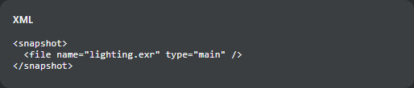
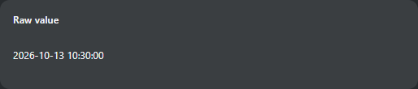
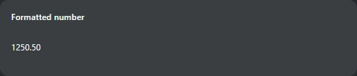
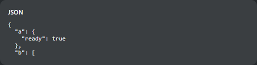
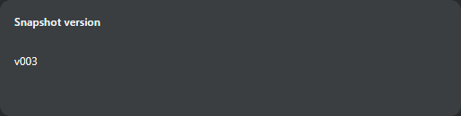
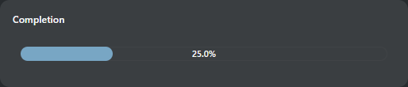
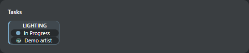

Аудит исходников TS 0.112.103 на 2026-10-13. Всего 193 table-класса + 1 совместимый input alias; 19 catalog aliases → 18 class paths (один ошибочный).
Полный перенос означает доступность XML handler, display-опций и действий в Vue Table View. Ни у одного из подключённых классов полный legacy-контракт не подтверждён.
Для 14 классов готов базовый сценарий отображения/открытия панели; это не полная готовность. HiddenRow частично подключён исключительно для журнала.
134 класса не подключены. SnapshotServerElementWdg явно недописан и не переносится. 43 pyasm.prod исключены ранее и не являются долгом переноса. Alias TextWdg учтён отдельно.
Перед переносом: изучить сам виджет и наследование → воспроизводимый пример → скрин legacy/ТХ и ТС на одинаковых данных → документировать опции, действия и права → проверить → переносить. TODO сам по себе не исключение. Непроверенный исходник не считается готовым к переносу.
Сканируются lexical top-level Python-классы и их наследники от двух BaseTableElementWdg; строковые/комментированные deprecated определения не считались. FunctionalTableElement и два base-класса — инфраструктура, не виджеты реестра.
Ошибка исходного каталога: explorer → tactic.ui.table.ExploreElementWdg, но есть ExplorerElementWdg/ExplorerTableElementWdg. Исправление имени само по себе не подключит ячейку в TS.
Наличие класса в TS, headless API, редактора формы или функции в отдельной панели не считается готовностью Table View. Input/Edit/CellEdit виджеты, layout-контейнеры и команды не смешиваются с количеством ячеек.
У всех подключённых обычных ячеек action handler должен быть пуст. Неизвестные display options отвергаются. Configured UI и чтение server cells доступны администратору.
Проверены все 34 handler aliases WIDGETS без Store/БД, отказ остальных 179 class paths, ограниченные опции, action и journal-ветка. Дополнительно четыре value widget проверены по source display bodies и typed транспорту ТХ/ТС. Полный GUI legacy/runtime и пользовательские custom/plugin классы вне checkout не проверялись.
Пять файлов legacy не токенизируются (см. JSON); отдельный просмотр показал, что в них нет table-определений: upgrade dump/reporter, prod queue, AD script, ClientWdg(BaseRefreshWdg).
Полный CSV для Excel · JSON с исходниками и проверками
| Alias | Handler | Статус | Работает | Осталось |
|---|---|---|---|---|
| simple | tactic.ui.common.SimpleTableElementWdg | Частично | Текст физической колонки; column, сортировка; boolean отображается общим checkbox. | Нет общего inline edit, empty/total_summary, legacy wiki-разметки и исходного форматирования timestamp в этом presenter. Допустима только display-опция column. |
| default | tactic.ui.common.SimpleTableElementWdg | Частично | Текст физической колонки; column, сортировка; boolean отображается общим checkbox. | Нет общего inline edit, empty/total_summary, legacy wiki-разметки и исходного форматирования timestamp в этом presenter. Допустима только display-опция column. |
| raw_data | tactic.ui.common.RawTableElementWdg | Частично | Сырое значение физической колонки; column и сортировка. | Нет общего inline edit; исходная обработка timestamp/time и now из get_display не вызывается. |
| format | tactic.ui.table.FormatElementWdg | Частично | Нативное форматирование чисел, дат, процентов, timecode; type/format/fps/timezone/constraint; Checkbox только для чтения. | Нет общего inline edit и total_summary. justify допускается descriptor, но выравнивание ячейки Vue по этой опции не применяется. |
| expression | tactic.ui.table.ExpressionElementWdg | Частично | Нативные вычисления; value/boolean/check, display/alt expression, format, списки, cache, fast; ошибки по ячейкам. | Не подключены bottom/group_bottom, link_expression/link_view, icon mode, filter_name, JS eval listener; нет общего inline edit и кнопки пересчёта таблицы. group_by/group_by_time metadata не означает исходную группировку и итоги. |
| expression_value | tactic.ui.table.ExpressionValueElementWdg | Частично | Вычисление выражения из значения физической колонки с sobject-контекстом; ошибка показывается в ячейке. | Нет общего inline editor для изменения самого выражения; дополнительные display-опции кроме column отвергаются. |
| link | tactic.ui.table.LinkElementWdg | Частично | Ссылка из поля/выражения: HTTP(S), mailto, абсолютный локальный URL. | icon принимается, но TableCell выводит текстовую ссылку; нет общего inline edit. file/JS URL не поддерживаются намеренно. |
| completion | tactic.ui.table.TaskCompletionWdg | Частично | Нативный процент выполнения задач с task_expr и проверкой доступа; 18px полоса как TacticCompletionCell ТХ, процент внутри, ограничение 0–100 и ARIA. | Не подключены исходные групповые/нижние итоги; ширина берётся из XML attribute width, старый display width не управляет layout Vue. |
| gantt | tactic.ui.table.GanttElementWdg | Не подключён | Диаграмма Task Manager существует отдельно; GanttElementWdg как XML-колонка не подключён. | |
| button | tactic.ui.table.ButtonElementWdg | Не подключён | Не подключены кнопка из XML-колонки и её сценарии/action. | |
| custom_layout | tactic.ui.table.CustomLayoutElementWdg | Не подключён | Нет встроенной в table cell композиции CustomLayoutElementWdg. | |
| freeform_layout | tactic.ui.table.FreeFormLayoutElementWdg | Не подключён | Нет встроенного в table cell FreeForm layout. | |
| delete | tactic.ui.table.DeleteElementWdg | Не подключён | Общее меню операций строки умеет удаление; XML-ячейка DeleteElementWdg отсутствует. | |
| explorer | tactic.ui.table.ExploreElementWdg | Ошибка legacy-каталога | Ошибка имени ExploreElementWdg вместо ExplorerElementWdg; renderer также не подключён. | |
| hidden_row | tactic.ui.table.HiddenRowElementWdg | Частично | Только журнал sthpw/transaction_log: view=log, dynamic_class=FastTableLayoutWdg, show-флаги false; JournalDetails. | Общий HiddenRow с произвольной вложенной таблицей/классом не подключён; принимается только package-path tactic.ui.table.HiddenRowElementWdg. |
| drop_item | tactic.ui.table.DropElementWdg | Не подключён | Нет XML-ячейки раскрывающегося элемента с исходными действиями. | |
| file_list | tactic.ui.table.SObjectFilesElementWdg | Не подключён | Общие Files/FilePreview существуют; список файлов этой XML-ячейки не подключён. | |
| metadata | tactic.ui.table.MetadataElementWdg | Не подключён | В ТС есть headless metadata/edit-контракт класса, но нет его table popup и renderer. | |
| python | tactic.ui.table.PythonElementWdg | Не подключён | Python в серверном API не означает исполнение PythonElementWdg для ячейки. |
| Контракт | Статус | Ограничение |
|---|---|---|
| TableLayoutWdg / TableWdg | Частично | Базовая таблица, сортировка поддержанных колонок, выбор строк, width из XML (48–640px), собственные группы, заметки/превью/задачи. Нет общего inline CellEdit, legacy итогов, полного resize/reorder/context menu. Допустимые layout strings проверяются ConfiguredView.supportedLayout. |
| FastTableLayoutWdg / StaticTableLayoutWdg / ToolLayoutWdg | Не подключены как общие layout | Общая таблица Vue не принимает эти layout names. FastTableLayoutWdg в специальном HiddenRow журнала — отдельный ограниченный контракт. |
| Общий CellEdit / EditMultiple | Не подключён общий table UI | Формы редактирования и TaskTableEditor существуют, но универсальный редактор значения ячейки и массовое редактирование выбранных ячеек ими не заменены. |
| bottom / group_bottom / total_summary | Не подключены | Свои rowGroups не заменяют исходные вычисляемые итоги колонок и групп. Эти display options не входят в allowlist. |
| Произвольные action / HTML / JS widgets | Не подключены | Старые команды и JS-кнопки не запускаются по наличию XML. Требуется отдельное типизированное подключение сценария. |
| Группа | Классов |
|---|---|
| Администрирование и настройки | 13 |
| Вычисления и итоги | 8 |
| Задачи и показатели | 26 |
| Заметки и общение | 7 |
| Значения и форматирование | 37 |
| Исключённый production | 43 |
| Календарь и сроки | 12 |
| Компоновка и действия | 16 |
| Связи и вложенные объекты | 11 |
| Файлы и версии | 21 |
| Класс | Группа / область | Работает | Скрин ТС (тестовые значения) | Осталось / причина | Проверка исходника / перенос | Исходник legacy | Класс TS |
|---|---|---|---|---|---|---|---|
pyasm.widget.file_wdg.ThumbWdg | Файлы и версии / Другие table-классы legacy | Пакетное превью snapshots/files; context/cascade, original/latest, filename/file_type; открытие общего FilePreview. | Не подключены detail/detail_class_name, redirect/redirect_expr, icon_size/min_icon_size и legacy JS/actions. Доступен HTTP; это не полный старый media/detail widget. | Поддержанный сценарий изучен; есть native/server/UI проверки. Полный legacy-контракт не подтверждён. Продолжать по конкретным сценариям из справки | D:\code\TACTIC_VUE\legacy\src\pyasm\widget\file_wdg.py:35 | D:\code\TACTIC_VUE\tactic_stream\src\pyasm\widget\file_wdg.py:25 | |
pyasm.widget.table_element_wdg.ArrayTableElementWdg | Значения и форматирование / Другие table-классы legacy | Исходное strip крайних | и замена || на запятую; короткий и полные class paths; NULL отображается пустым; сравнение source body и typed транспорта ТХ/ТС. | HTML runtime не исполняется; работают нативное текстовое значение и Table View presenter. Ячейка только для чтения. | Поддержанный сценарий изучен; есть native/server/UI проверки. Полный legacy-контракт не подтверждён. Продолжать по конкретным сценариям из справки | D:\code\TACTIC_VUE\legacy\src\pyasm\widget\table_element_wdg.py:839 | D:\code\TACTIC_VUE\tactic_stream\src\pyasm\widget\table_element_wdg.py:167 | |
pyasm.widget.table_element_wdg.XmlWdg | Значения и форматирование / Другие table-классы legacy | Безопасный текст XML, нативный zlib:, ошибка разбора рядом с исходным текстом, прокрутка; raw SDK/CSV не изменён. |  | Общий inline XML editor ТС пока не подключён; текущий блок закрывает отображение, исходный get_display HTML runtime не вызывается. | Поддержанный сценарий изучен; есть native/server/UI проверки. Полный legacy-контракт не подтверждён. Продолжать по конкретным сценариям из справки | D:\code\TACTIC_VUE\legacy\src\pyasm\widget\table_element_wdg.py:1135 | D:\code\TACTIC_VUE\tactic_stream\src\pyasm\widget\table_element_wdg.py:177 |
tactic.ui.common.base_table_element_wdg.RawTableElementWdg | Значения и форматирование / raw_data | Сырое значение физической колонки; column и сортировка. |  | Нет общего inline edit; исходная обработка timestamp/time и now из get_display не вызывается. | Поддержанный сценарий изучен; есть native/server/UI проверки. Полный legacy-контракт не подтверждён. Продолжать по конкретным сценариям из справки | D:\code\TACTIC_VUE\legacy\src\tactic\ui\common\base_table_element_wdg.py:315 | D:\code\TACTIC_VUE\tactic_stream\src\tactic\ui\common\base_table_element_wdg.py:73 |
tactic.ui.common.base_table_element_wdg.SimpleTableElementWdg | Значения и форматирование / simple, default | Текст физической колонки; column, сортировка; boolean отображается общим checkbox. | Нет общего inline edit, empty/total_summary, legacy wiki-разметки и исходного форматирования timestamp в этом presenter. Допустима только display-опция column. | Поддержанный сценарий изучен; есть native/server/UI проверки. Полный legacy-контракт не подтверждён. Продолжать по конкретным сценариям из справки | D:\code\TACTIC_VUE\legacy\src\tactic\ui\common\base_table_element_wdg.py:361 | D:\code\TACTIC_VUE\tactic_stream\src\tactic\ui\common\base_table_element_wdg.py:81 | |
tactic.ui.table.expression_element_wdg.ExpressionElementWdg | Вычисления и итоги / expression | Нативные вычисления; value/boolean/check, display/alt expression, format, списки, cache, fast; ошибки по ячейкам. | Не подключены bottom/group_bottom, link_expression/link_view, icon mode, filter_name, JS eval listener; нет общего inline edit и кнопки пересчёта таблицы. group_by/group_by_time metadata не означает исходную группировку и итоги. | Поддержанный сценарий изучен; есть native/server/UI проверки. Полный legacy-контракт не подтверждён. Продолжать по конкретным сценариям из справки | D:\code\TACTIC_VUE\legacy\src\tactic\ui\table\expression_element_wdg.py:33 | D:\code\TACTIC_VUE\tactic_stream\src\tactic\ui\table\expression_element_wdg.py:24 | |
tactic.ui.table.expression_element_wdg.ExpressionValueElementWdg | Вычисления и итоги / expression_value | Вычисление выражения из значения физической колонки с sobject-контекстом; ошибка показывается в ячейке. | Нет общего inline editor для изменения самого выражения; дополнительные display-опции кроме column отвергаются. | Поддержанный сценарий изучен; есть native/server/UI проверки. Полный legacy-контракт не подтверждён. Продолжать по конкретным сценариям из справки | D:\code\TACTIC_VUE\legacy\src\tactic\ui\table\expression_element_wdg.py:1117 | D:\code\TACTIC_VUE\tactic_stream\src\tactic\ui\table\expression_element_wdg.py:341 | |
tactic.ui.table.format_element_wdg.FormatElementWdg | Значения и форматирование / format | Нативное форматирование чисел, дат, процентов, timecode; type/format/fps/timezone/constraint; Checkbox только для чтения. |  | Нет общего inline edit и total_summary. justify допускается descriptor, но выравнивание ячейки Vue по этой опции не применяется. | Поддержанный сценарий изучен; есть native/server/UI проверки. Полный legacy-контракт не подтверждён. Продолжать по конкретным сценариям из справки | D:\code\TACTIC_VUE\legacy\src\tactic\ui\table\format_element_wdg.py:30 | D:\code\TACTIC_VUE\tactic_stream\src\tactic\ui\table\format_element_wdg.py:8 |
tactic.ui.table.hidden_row_element_wdg.HiddenRowElementWdg | Компоновка и действия / hidden_row | Только журнал sthpw/transaction_log: view=log, dynamic_class=FastTableLayoutWdg, show-флаги false; JournalDetails. | Не снят | Общий HiddenRow с произвольной вложенной таблицей/классом не подключён; принимается только package-path tactic.ui.table.HiddenRowElementWdg. | Требует прогона исходника Не начинать без примера и проверки исходника | D:\code\TACTIC_VUE\legacy\src\tactic\ui\table\hidden_row_element_wdg.py:21 | Нет класса с этим полным именем |
tactic.ui.table.json_element_wdg.JsonElementWdg | Значения и форматирование / Дополнительные tactic.ui.table | Исходные sorted keys, indent=2, пустой false/empty JSON, ограниченная высота/прокрутка, безопасный текст; raw SDK сохраняет значение. |  | Общий inline JSON editor ТС пока не подключён; height принимается в px до 600. Исходный HTML runtime не исполняется. | Поддержанный сценарий изучен; есть native/server/UI проверки. Полный legacy-контракт не подтверждён. Продолжать по конкретным сценариям из справки | D:\code\TACTIC_VUE\legacy\src\tactic\ui\table\json_element_wdg.py:24 | D:\code\TACTIC_VUE\tactic_stream\src\tactic\ui\table\json_element_wdg.py:7 |
tactic.ui.table.link_element_wdg.LinkElementWdg | Значения и форматирование / link | Ссылка из поля/выражения: HTTP(S), mailto, абсолютный локальный URL. | icon принимается, но TableCell выводит текстовую ссылку; нет общего inline edit. file/JS URL не поддерживаются намеренно. | Поддержанный сценарий изучен; есть native/server/UI проверки. Полный legacy-контракт не подтверждён. Продолжать по конкретным сценариям из справки | D:\code\TACTIC_VUE\legacy\src\tactic\ui\table\link_element_wdg.py:24 | D:\code\TACTIC_VUE\tactic_stream\src\tactic\ui\table\link_element_wdg.py:7 | |
tactic.ui.table.snapshot_element_wdg.SnapshotVersionElementWdg | Файлы и версии / Дополнительные tactic.ui.table | No version / Latest / Current и padding положительных версий из checkin/version_padding; нативный typed вывод и перевод UI меток. |  | NULL теперь показывает No version вместо исходной ошибки. Raw SDK/CSV не форматируется; HTML runtime исключён. | Поддержанный сценарий изучен; есть native/server/UI проверки. Полный legacy-контракт не подтверждён. Продолжать по конкретным сценариям из справки | D:\code\TACTIC_VUE\legacy\src\tactic\ui\table\snapshot_element_wdg.py:129 | D:\code\TACTIC_VUE\tactic_stream\src\tactic\ui\table\snapshot_element_wdg.py:7 |
tactic.ui.table.statistic_wdg.TaskCompletionWdg | Задачи и показатели / completion | Нативный процент выполнения задач с task_expr и проверкой доступа; 18px полоса как TacticCompletionCell ТХ, процент внутри, ограничение 0–100 и ARIA. |  | Не подключены исходные групповые/нижние итоги; ширина берётся из XML attribute width, старый display width не управляет layout Vue. | Поддержанный сценарий изучен; есть native/server/UI проверки. Полный legacy-контракт не подтверждён. Продолжать по конкретным сценариям из справки | D:\code\TACTIC_VUE\legacy\src\tactic\ui\table\statistic_wdg.py:29 | D:\code\TACTIC_VUE\tactic_stream\src\tactic\ui\table\statistic_wdg.py:20 |
tactic.ui.table.task_element_wdg.TaskElementWdg | Задачи и показатели / Дополнительные tactic.ui.table | Задачи по процессам, фильтрам и pipeline; просмотр инспектора; существующий TaskTableEditor для изменений. |  | Нет полного старого набора presentation/actions/CGI child-task filters. Неподдержанные опции отвергаются; generic CellEdit не заменён редактором задач. | Поддержанный сценарий изучен; есть native/server/UI проверки. Полный legacy-контракт не подтверждён. Продолжать по конкретным сценариям из справки | D:\code\TACTIC_VUE\legacy\src\tactic\ui\table\task_element_wdg.py:81 | D:\code\TACTIC_VUE\tactic_stream\src\tactic\ui\table\task_element_wdg.py:64 |
tactic.ui.widget.discussion_wdg.DiscussionElementWdg | Заметки и общение / Другие table-классы legacy | Процессы и счётчики заметок либо compact icon; process/context/use_parent; открытие NotesPanel. | Нет email-режима (allow_email=true отвергается); только default/icon и ограниченный набор опций. Старый HTML/JS popup не переносится как runtime. | Поддержанный сценарий изучен; есть native/server/UI проверки. Полный legacy-контракт не подтверждён. Продолжать по конкретным сценариям из справки | D:\code\TACTIC_VUE\legacy\src\tactic\ui\widget\discussion_wdg.py:37 | D:\code\TACTIC_VUE\tactic_stream\src\tactic\ui\widget\discussion_wdg.py:266 |
| Класс | Группа / область | Работает | Скрин ТС (тестовые значения) | Осталось / причина | Проверка исходника / перенос | Исходник legacy | Класс TS |
|---|---|---|---|---|---|---|---|
pyasm.widget.annotate_wdg.AnnotateLink | Заметки и общение / Другие table-классы legacy | Не снят | Нет подключения этого класса к describe_cell/WIDGETS и TableCell.vue; при таком display handler показывается Widget unavailable. | Требует прогона исходника Не начинать без примера и проверки исходника | D:\code\TACTIC_VUE\legacy\src\pyasm\widget\annotate_wdg.py:28 | Нет класса с этим полным именем | |
pyasm.widget.clipboard_wdg.ClipboardHistoryElement | Администрирование и настройки / Другие table-классы legacy | Не снят | Нет подключения этого класса к describe_cell/WIDGETS и TableCell.vue; при таком display handler показывается Widget unavailable. | Требует прогона исходника Не начинать без примера и проверки исходника | D:\code\TACTIC_VUE\legacy\src\pyasm\widget\clipboard_wdg.py:112 | Нет класса с этим полным именем | |
pyasm.widget.custom_info_wdg.CustomInfoWdg | Значения и форматирование / Другие table-классы legacy | Не снят | Нет подключения этого класса к describe_cell/WIDGETS и TableCell.vue; при таком display handler показывается Widget unavailable. | Требует прогона исходника Не начинать без примера и проверки исходника | D:\code\TACTIC_VUE\legacy\src\pyasm\widget\custom_info_wdg.py:24 | Нет класса с этим полным именем | |
pyasm.widget.dependency_wdg.DependencyLink | Значения и форматирование / Другие table-классы legacy | Не снят | Нет подключения этого класса к describe_cell/WIDGETS и TableCell.vue; при таком display handler показывается Widget unavailable. | Требует прогона исходника Не начинать без примера и проверки исходника | D:\code\TACTIC_VUE\legacy\src\pyasm\widget\dependency_wdg.py:28 | Нет класса с этим полным именем | |
pyasm.widget.dependency_wdg.DependencyThumbWdg | Файлы и версии / Другие table-классы legacy | Не снят | Нет подключения этого класса к describe_cell/WIDGETS и TableCell.vue; при таком display handler показывается Widget unavailable. | Требует прогона исходника Не начинать без примера и проверки исходника | D:\code\TACTIC_VUE\legacy\src\pyasm\widget\dependency_wdg.py:458 | Нет класса с этим полным именем | |
pyasm.widget.discussion_wdg.DiscussionWdg | Заметки и общение / Другие table-классы legacy | Не снят | Нет подключения этого класса к describe_cell/WIDGETS и TableCell.vue; при таком display handler показывается Widget unavailable. Старый qualified class не является alias нового одноимённого/похожего виджета. | Требует прогона исходника Не начинать без примера и проверки исходника | D:\code\TACTIC_VUE\legacy\src\pyasm\widget\discussion_wdg.py:37 | Нет класса с этим полным именем | |
pyasm.widget.file_wdg.FileInfoWdg | Файлы и версии / Другие table-классы legacy | Не снят | Нет подключения этого класса к describe_cell/WIDGETS и TableCell.vue; при таком display handler показывается Widget unavailable. | Требует прогона исходника Не начинать без примера и проверки исходника | D:\code\TACTIC_VUE\legacy\src\pyasm\widget\file_wdg.py:1703 | Нет класса с этим полным именем | |
pyasm.widget.gantt_wdg.CheckinHistoryGanttWdg | Календарь и сроки / Другие table-классы legacy | Не снят | Нет подключения этого класса к describe_cell/WIDGETS и TableCell.vue; при таком display handler показывается Widget unavailable. | Требует прогона исходника Не начинать без примера и проверки исходника | D:\code\TACTIC_VUE\legacy\src\pyasm\widget\gantt_wdg.py:1410 | Нет класса с этим полным именем | |
pyasm.widget.gantt_wdg.DynGanttWdg | Календарь и сроки / Другие table-классы legacy | Не снят | Нет подключения этого класса к describe_cell/WIDGETS и TableCell.vue; при таком display handler показывается Widget unavailable. | Требует прогона исходника Не начинать без примера и проверки исходника | D:\code\TACTIC_VUE\legacy\src\pyasm\widget\gantt_wdg.py:1644 | Нет класса с этим полным именем | |
pyasm.widget.gantt_wdg.GanttWdg | Календарь и сроки / Другие table-классы legacy | Не снят | Нет подключения этого класса к describe_cell/WIDGETS и TableCell.vue; при таком display handler показывается Widget unavailable. Старый qualified class не является alias нового одноимённого/похожего виджета. | Требует прогона исходника Не начинать без примера и проверки исходника | D:\code\TACTIC_VUE\legacy\src\pyasm\widget\gantt_wdg.py:28 | Нет класса с этим полным именем | |
pyasm.widget.gantt_wdg.ResourceUsageGanttWdg | Календарь и сроки / Другие table-классы legacy | Не снят | Нет подключения этого класса к describe_cell/WIDGETS и TableCell.vue; при таком display handler показывается Widget unavailable. | Требует прогона исходника Не начинать без примера и проверки исходника | D:\code\TACTIC_VUE\legacy\src\pyasm\widget\gantt_wdg.py:1481 | Нет класса с этим полным именем | |
pyasm.widget.gantt_wdg.SObjectTaskGanttWdg | Календарь и сроки / Другие table-классы legacy | Не снят | Нет подключения этого класса к describe_cell/WIDGETS и TableCell.vue; при таком display handler показывается Widget unavailable. | Требует прогона исходника Не начинать без примера и проверки исходника | D:\code\TACTIC_VUE\legacy\src\pyasm\widget\gantt_wdg.py:1963 | Нет класса с этим полным именем | |
pyasm.widget.gantt_wdg.ScheduleGanttWdg | Календарь и сроки / Другие table-классы legacy | Не снят | Нет подключения этого класса к describe_cell/WIDGETS и TableCell.vue; при таком display handler показывается Widget unavailable. | Требует прогона исходника Не начинать без примера и проверки исходника | D:\code\TACTIC_VUE\legacy\src\pyasm\widget\gantt_wdg.py:869 | Нет класса с этим полным именем | |
pyasm.widget.gantt_wdg.StatusHistoryGanttWdg | Календарь и сроки / Другие table-классы legacy | Не снят | Нет подключения этого класса к describe_cell/WIDGETS и TableCell.vue; при таком display handler показывается Widget unavailable. | Требует прогона исходника Не начинать без примера и проверки исходника | D:\code\TACTIC_VUE\legacy\src\pyasm\widget\gantt_wdg.py:1245 | Нет класса с этим полным именем | |
pyasm.widget.my_tactic_summary_wdg.MyTacticSummaryWdg | Администрирование и настройки / Другие table-классы legacy | Не снят | Нет подключения этого класса к describe_cell/WIDGETS и TableCell.vue; при таком display handler показывается Widget unavailable. | Требует прогона исходника Не начинать без примера и проверки исходника | D:\code\TACTIC_VUE\legacy\src\pyasm\widget\my_tactic_summary_wdg.py:23 | Нет класса с этим полным именем | |
pyasm.widget.naming_wdg.NamingElementWdg | Файлы и версии / Другие table-классы legacy | Не снят | Нет подключения этого класса к describe_cell/WIDGETS и TableCell.vue; при таком display handler показывается Widget unavailable. | Требует прогона исходника Не начинать без примера и проверки исходника | D:\code\TACTIC_VUE\legacy\src\pyasm\widget\naming_wdg.py:254 | Нет класса с этим полным именем | |
pyasm.widget.parallel_status.ParallelStatusEditWdg | Задачи и показатели / Другие table-классы legacy | Не снят | Нет подключения этого класса к describe_cell/WIDGETS и TableCell.vue; при таком display handler показывается Widget unavailable. | Требует прогона исходника Не начинать без примера и проверки исходника | D:\code\TACTIC_VUE\legacy\src\pyasm\widget\parallel_status.py:555 | Нет класса с этим полным именем | |
pyasm.widget.parallel_status.ParallelStatusWdg | Задачи и показатели / Другие table-классы legacy | Не снят | Нет подключения этого класса к describe_cell/WIDGETS и TableCell.vue; при таком display handler показывается Widget unavailable. | Требует прогона исходника Не начинать без примера и проверки исходника | D:\code\TACTIC_VUE\legacy\src\pyasm\widget\parallel_status.py:29 | Нет класса с этим полным именем | |
pyasm.widget.project_wdg.ProjectClassWdg | Администрирование и настройки / Другие table-классы legacy | Не снят | Нет подключения этого класса к describe_cell/WIDGETS и TableCell.vue; при таком display handler показывается Widget unavailable. | Требует прогона исходника Не начинать без примера и проверки исходника | D:\code\TACTIC_VUE\legacy\src\pyasm\widget\project_wdg.py:86 | Нет класса с этим полным именем | |
pyasm.widget.project_wdg.ProjectSummaryWdg | Администрирование и настройки / Другие table-классы legacy | Не снят | Нет подключения этого класса к describe_cell/WIDGETS и TableCell.vue; при таком display handler показывается Widget unavailable. | Требует прогона исходника Не начинать без примера и проверки исходника | D:\code\TACTIC_VUE\legacy\src\pyasm\widget\project_wdg.py:111 | Нет класса с этим полным именем | |
pyasm.widget.project_wdg.ProjectWdg | Администрирование и настройки / Другие table-классы legacy | Не снят | Нет подключения этого класса к describe_cell/WIDGETS и TableCell.vue; при таком display handler показывается Widget unavailable. | Требует прогона исходника Не начинать без примера и проверки исходника | D:\code\TACTIC_VUE\legacy\src\pyasm\widget\project_wdg.py:26 | Нет класса с этим полным именем | |
pyasm.widget.serial_status.SerialStatusWdg | Задачи и показатели / Другие table-классы legacy | Не снят | Нет подключения этого класса к describe_cell/WIDGETS и TableCell.vue; при таком display handler показывается Widget unavailable. | Требует прогона исходника Не начинать без примера и проверки исходника | D:\code\TACTIC_VUE\legacy\src\pyasm\widget\serial_status.py:238 | Нет класса с этим полным именем | |
pyasm.widget.serial_status.SimpleStatusWdg | Задачи и показатели / Другие table-классы legacy | Не снят | Нет подключения этого класса к describe_cell/WIDGETS и TableCell.vue; при таком display handler показывается Widget unavailable. | Требует прогона исходника Не начинать без примера и проверки исходника | D:\code\TACTIC_VUE\legacy\src\pyasm\widget\serial_status.py:33 | Нет класса с этим полным именем | |
pyasm.widget.sobject_browser_wdg.SObjectConnectionDetailElement | Связи и вложенные объекты / Другие table-классы legacy | Не снят | Нет подключения этого класса к describe_cell/WIDGETS и TableCell.vue; при таком display handler показывается Widget unavailable. | Требует прогона исходника Не начинать без примера и проверки исходника | D:\code\TACTIC_VUE\legacy\src\pyasm\widget\sobject_browser_wdg.py:255 | Нет класса с этим полным именем | |
pyasm.widget.sobject_browser_wdg.SObjectConnectionElement | Связи и вложенные объекты / Другие table-классы legacy | Не снят | Нет подключения этого класса к describe_cell/WIDGETS и TableCell.vue; при таком display handler показывается Widget unavailable. | Требует прогона исходника Не начинать без примера и проверки исходника | D:\code\TACTIC_VUE\legacy\src\pyasm\widget\sobject_browser_wdg.py:146 | Нет класса с этим полным именем | |
pyasm.widget.statistic_wdg.CalendarBarWdg | Задачи и показатели / Другие table-классы legacy | Не снят | Нет подключения этого класса к describe_cell/WIDGETS и TableCell.vue; при таком display handler показывается Widget unavailable. | Требует прогона исходника Не начинать без примера и проверки исходника | D:\code\TACTIC_VUE\legacy\src\pyasm\widget\statistic_wdg.py:412 | Нет класса с этим полным именем | |
pyasm.widget.statistic_wdg.TaskCompletionWdg | Задачи и показатели / Другие table-классы legacy | Не снят | Нет подключения этого класса к describe_cell/WIDGETS и TableCell.vue; при таком display handler показывается Widget unavailable. Старый qualified class не является alias нового одноимённого/похожего виджета. | Требует прогона исходника Не начинать без примера и проверки исходника | D:\code\TACTIC_VUE\legacy\src\pyasm\widget\statistic_wdg.py:29 | Нет класса с этим полным именем | |
pyasm.widget.statistic_wdg.TaskGroupCompletionWdg | Задачи и показатели / Другие table-классы legacy | Не снят | Нет подключения этого класса к describe_cell/WIDGETS и TableCell.vue; при таком display handler показывается Widget unavailable. | Требует прогона исходника Не начинать без примера и проверки исходника | D:\code\TACTIC_VUE\legacy\src\pyasm\widget\statistic_wdg.py:181 | Нет класса с этим полным именем | |
pyasm.widget.tab_wdg.CustomXmlWdg | Значения и форматирование / Другие table-классы legacy | Не снят | Нет подключения этого класса к describe_cell/WIDGETS и TableCell.vue; при таком display handler показывается Widget unavailable. | Требует прогона исходника Не начинать без примера и проверки исходника | D:\code\TACTIC_VUE\legacy\src\pyasm\widget\tab_wdg.py:463 | Нет класса с этим полным именем | |
pyasm.widget.table_element_wdg.AuxDataWdg | Значения и форматирование / Другие table-классы legacy | Не снят | Нет подключения этого класса к describe_cell/WIDGETS и TableCell.vue; при таком display handler показывается Widget unavailable. | Требует прогона исходника Не начинать без примера и проверки исходника | D:\code\TACTIC_VUE\legacy\src\pyasm\widget\table_element_wdg.py:2239 | Нет класса с этим полным именем | |
pyasm.widget.table_element_wdg.CheckTableElementWdg | Значения и форматирование / Другие table-классы legacy | Не снят | Нет подключения этого класса к describe_cell/WIDGETS и TableCell.vue; при таком display handler показывается Widget unavailable. | Требует прогона исходника Не начинать без примера и проверки исходника | D:\code\TACTIC_VUE\legacy\src\pyasm\widget\table_element_wdg.py:849 | Нет класса с этим полным именем | |
pyasm.widget.table_element_wdg.CheckboxColWdg | Значения и форматирование / Другие table-классы legacy | Не снят | Нет подключения этого класса к describe_cell/WIDGETS и TableCell.vue; при таком display handler показывается Widget unavailable. | Требует прогона исходника Не начинать без примера и проверки исходника | D:\code\TACTIC_VUE\legacy\src\pyasm\widget\table_element_wdg.py:2091 | Нет класса с этим полным именем | |
pyasm.widget.table_element_wdg.DateTimeWdg | Значения и форматирование / Другие table-классы legacy | Не снят | Нет подключения этого класса к describe_cell/WIDGETS и TableCell.vue; при таком display handler показывается Widget unavailable. Старый qualified class не является alias нового одноимённого/похожего виджета. | Требует прогона исходника Не начинать без примера и проверки исходника | D:\code\TACTIC_VUE\legacy\src\pyasm\widget\table_element_wdg.py:905 | Нет класса с этим полным именем | |
pyasm.widget.table_element_wdg.DateWdg | Значения и форматирование / Другие table-классы legacy | Не снят | Нет подключения этого класса к describe_cell/WIDGETS и TableCell.vue; при таком display handler показывается Widget unavailable. Старый qualified class не является alias нового одноимённого/похожего виджета. | Требует прогона исходника Не начинать без примера и проверки исходника | D:\code\TACTIC_VUE\legacy\src\pyasm\widget\table_element_wdg.py:862 | Нет класса с этим полным именем | |
pyasm.widget.table_element_wdg.DateYearTimeWdg | Значения и форматирование / Другие table-классы legacy | Не снят | Нет подключения этого класса к describe_cell/WIDGETS и TableCell.vue; при таком display handler показывается Widget unavailable. | Требует прогона исходника Не начинать без примера и проверки исходника | D:\code\TACTIC_VUE\legacy\src\pyasm\widget\table_element_wdg.py:889 | Нет класса с этим полным именем | |
pyasm.widget.table_element_wdg.DynamicTableElementWdg | Значения и форматирование / Другие table-классы legacy | Не снят | Нет подключения этого класса к describe_cell/WIDGETS и TableCell.vue; при таком display handler показывается Widget unavailable. | Требует прогона исходника Не начинать без примера и проверки исходника | D:\code\TACTIC_VUE\legacy\src\pyasm\widget\table_element_wdg.py:582 | Нет класса с этим полным именем | |
pyasm.widget.table_element_wdg.EditCheckboxWdg | Значения и форматирование / Другие table-классы legacy | Не снят | Нет подключения этого класса к describe_cell/WIDGETS и TableCell.vue; при таком display handler показывается Widget unavailable. | Требует прогона исходника Не начинать без примера и проверки исходника | D:\code\TACTIC_VUE\legacy\src\pyasm\widget\table_element_wdg.py:2147 | Нет класса с этим полным именем | |
pyasm.widget.table_element_wdg.ExpandableTextWdg | Значения и форматирование / Другие table-классы legacy | Не снят | Нет подключения этого класса к describe_cell/WIDGETS и TableCell.vue; при таком display handler показывается Widget unavailable. | Требует прогона исходника Не начинать без примера и проверки исходника | D:\code\TACTIC_VUE\legacy\src\pyasm\widget\table_element_wdg.py:2158 | Нет класса с этим полным именем | |
pyasm.widget.table_element_wdg.FileAppendLinkTableElement | Файлы и версии / Другие table-классы legacy | Не снят | Нет подключения этого класса к describe_cell/WIDGETS и TableCell.vue; при таком display handler показывается Widget unavailable. | Требует прогона исходника Не начинать без примера и проверки исходника | D:\code\TACTIC_VUE\legacy\src\pyasm\widget\table_element_wdg.py:1100 | Нет класса с этим полным именем | |
pyasm.widget.table_element_wdg.GroupTableElement | Связи и вложенные объекты / Другие table-классы legacy | Не снят | Нет подключения этого класса к describe_cell/WIDGETS и TableCell.vue; при таком display handler показывается Widget unavailable. | Требует прогона исходника Не начинать без примера и проверки исходника | D:\code\TACTIC_VUE\legacy\src\pyasm\widget\table_element_wdg.py:1722 | Нет класса с этим полным именем | |
pyasm.widget.table_element_wdg.HiddenRowToggleWdg | Компоновка и действия / Другие table-классы legacy | Не снят | Нет подключения этого класса к describe_cell/WIDGETS и TableCell.vue; при таком display handler показывается Widget unavailable. | Требует прогона исходника Не начинать без примера и проверки исходника | D:\code\TACTIC_VUE\legacy\src\pyasm\widget\table_element_wdg.py:1231 | Нет класса с этим полным именем | |
pyasm.widget.table_element_wdg.NameWdg | Значения и форматирование / Другие table-классы legacy | Не снят | Нет подключения этого класса к describe_cell/WIDGETS и TableCell.vue; при таком display handler показывается Widget unavailable. | Требует прогона исходника Не начинать без примера и проверки исходника | D:\code\TACTIC_VUE\legacy\src\pyasm\widget\table_element_wdg.py:1216 | Нет класса с этим полным именем | |
pyasm.widget.table_element_wdg.PlaceHolderElementWdg | Компоновка и действия / Другие table-классы legacy | Не снят | Нет подключения этого класса к describe_cell/WIDGETS и TableCell.vue; при таком display handler показывается Widget unavailable. | Проверено: намеренно пустая служебная ячейка, get_display возвращает пустую строку. Не самостоятельный пользовательский сценарий | D:\code\TACTIC_VUE\legacy\src\pyasm\widget\table_element_wdg.py:490 | Нет класса с этим полным именем | |
pyasm.widget.table_element_wdg.PublishTableElement | Файлы и версии / Другие table-классы legacy | Не снят | Нет подключения этого класса к describe_cell/WIDGETS и TableCell.vue; при таком display handler показывается Widget unavailable. | Требует прогона исходника Не начинать без примера и проверки исходника | D:\code\TACTIC_VUE\legacy\src\pyasm\widget\table_element_wdg.py:2311 | Нет класса с этим полным именем | |
pyasm.widget.table_element_wdg.RenderLinkTableElement | Файлы и версии / Другие table-классы legacy | Не снят | Нет подключения этого класса к describe_cell/WIDGETS и TableCell.vue; при таком display handler показывается Widget unavailable. | Требует прогона исходника Не начинать без примера и проверки исходника | D:\code\TACTIC_VUE\legacy\src\pyasm\widget\table_element_wdg.py:1084 | Нет класса с этим полным именем | |
pyasm.widget.table_element_wdg.SObjectAttachTableElement | Связи и вложенные объекты / Другие table-классы legacy | Не снят | Нет подключения этого класса к describe_cell/WIDGETS и TableCell.vue; при таком display handler показывается Widget unavailable. | Требует прогона исходника Не начинать без примера и проверки исходника | D:\code\TACTIC_VUE\legacy\src\pyasm\widget\table_element_wdg.py:1775 | Нет класса с этим полным именем | |
pyasm.widget.table_element_wdg.SObjectExplorerWdg | Связи и вложенные объекты / Другие table-классы legacy | Не снят | Нет подключения этого класса к describe_cell/WIDGETS и TableCell.vue; при таком display handler показывается Widget unavailable. | Требует прогона исходника Не начинать без примера и проверки исходника | D:\code\TACTIC_VUE\legacy\src\pyasm\widget\table_element_wdg.py:2350 | Нет класса с этим полным именем | |
pyasm.widget.table_element_wdg.SObjectLinkElementWdg | Связи и вложенные объекты / Другие table-классы legacy | Не снят | Нет подключения этого класса к describe_cell/WIDGETS и TableCell.vue; при таком display handler показывается Widget unavailable. | Требует прогона исходника Не начинать без примера и проверки исходника | D:\code\TACTIC_VUE\legacy\src\pyasm\widget\table_element_wdg.py:2337 | Нет класса с этим полным именем | |
pyasm.widget.table_element_wdg.SearchTypeElementWdg | Значения и форматирование / Другие table-классы legacy | Не снят | Нет подключения этого класса к describe_cell/WIDGETS и TableCell.vue; при таком display handler показывается Widget unavailable. | Требует прогона исходника Не начинать без примера и проверки исходника | D:\code\TACTIC_VUE\legacy\src\pyasm\widget\table_element_wdg.py:2254 | Нет класса с этим полным именем | |
pyasm.widget.table_element_wdg.SimpleInfoWdg | Значения и форматирование / Другие table-классы legacy | Не снят | Нет подключения этого класса к describe_cell/WIDGETS и TableCell.vue; при таком display handler показывается Widget unavailable. | Требует прогона исходника Не начинать без примера и проверки исходника | D:\code\TACTIC_VUE\legacy\src\pyasm\widget\table_element_wdg.py:1114 | Нет класса с этим полным именем | |
pyasm.widget.table_element_wdg.SimpleTableElementWdg | Значения и форматирование / Другие table-классы legacy | Не снят | Нет подключения этого класса к describe_cell/WIDGETS и TableCell.vue; при таком display handler показывается Widget unavailable. Старый qualified class не является alias нового одноимённого/похожего виджета. | Требует прогона исходника Не начинать без примера и проверки исходника | D:\code\TACTIC_VUE\legacy\src\pyasm\widget\table_element_wdg.py:498 | D:\code\TACTIC_VUE\tactic_stream\src\pyasm\widget\table_element_wdg.py:158 | |
pyasm.widget.table_element_wdg.SubmissionLinkTableElement | Значения и форматирование / Другие table-классы legacy | Не снят | Нет подключения этого класса к describe_cell/WIDGETS и TableCell.vue; при таком display handler показывается Widget unavailable. | Требует прогона исходника Не начинать без примера и проверки исходника | D:\code\TACTIC_VUE\legacy\src\pyasm\widget\table_element_wdg.py:1061 | Нет класса с этим полным именем | |
pyasm.widget.table_element_wdg.TableAddWdg | Компоновка и действия / Другие table-классы legacy | Не снят | Нет подключения этого класса к describe_cell/WIDGETS и TableCell.vue; при таком display handler показывается Widget unavailable. | Требует прогона исходника Не начинать без примера и проверки исходника | D:\code\TACTIC_VUE\legacy\src\pyasm\widget\table_element_wdg.py:2061 | Нет класса с этим полным именем | |
pyasm.widget.table_element_wdg.UpdateWdg | Значения и форматирование / Другие table-классы legacy | Не снят | Нет подключения этого класса к describe_cell/WIDGETS и TableCell.vue; при таком display handler показывается Widget unavailable. | Требует прогона исходника Не начинать без примера и проверки исходника | D:\code\TACTIC_VUE\legacy\src\pyasm\widget\table_element_wdg.py:920 | Нет класса с этим полным именем | |
pyasm.widget.table_element_wdg.WikiElementWdg | Значения и форматирование / Другие table-классы legacy | Не снят | Нет подключения этого класса к describe_cell/WIDGETS и TableCell.vue; при таком display handler показывается Widget unavailable. | Требует прогона исходника Не начинать без примера и проверки исходника | D:\code\TACTIC_VUE\legacy\src\pyasm\widget\table_element_wdg.py:1194 | Нет класса с этим полным именем | |
pyasm.widget.table_element_wdg.WrapperTableElementWdg | Компоновка и действия / Другие table-классы legacy | Не снят | Нет подключения этого класса к describe_cell/WIDGETS и TableCell.vue; при таком display handler показывается Widget unavailable. | Требует прогона исходника Не начинать без примера и проверки исходника | D:\code\TACTIC_VUE\legacy\src\pyasm\widget\table_element_wdg.py:830 | Нет класса с этим полным именем | |
pyasm.widget.task_wdg.SObjectTaskTableElement | Задачи и показатели / Другие table-классы legacy | Не снят | Нет подключения этого класса к describe_cell/WIDGETS и TableCell.vue; при таком display handler показывается Widget unavailable. | Требует прогона исходника Не начинать без примера и проверки исходника | D:\code\TACTIC_VUE\legacy\src\pyasm\widget\task_wdg.py:367 | Нет класса с этим полным именем | |
pyasm.widget.task_wdg.TaskParentSpacingTableElement | Задачи и показатели / Другие table-классы legacy | Не снят | Нет подключения этого класса к describe_cell/WIDGETS и TableCell.vue; при таком display handler показывается Widget unavailable. | Требует прогона исходника Не начинать без примера и проверки исходника | D:\code\TACTIC_VUE\legacy\src\pyasm\widget\task_wdg.py:1006 | Нет класса с этим полным именем | |
pyasm.widget.task_wdg.TaskWarningTableElement | Задачи и показатели / Другие table-классы legacy | Не снят | Нет подключения этого класса к describe_cell/WIDGETS и TableCell.vue; при таком display handler показывается Widget unavailable. | Требует прогона исходника Не начинать без примера и проверки исходника | D:\code\TACTIC_VUE\legacy\src\pyasm\widget\task_wdg.py:895 | Нет класса с этим полным именем | |
pyasm.widget.timecard_wdg.TimecardInfoTableElement | Календарь и сроки / Другие table-классы legacy | Не снят | Нет подключения этого класса к describe_cell/WIDGETS и TableCell.vue; при таком display handler показывается Widget unavailable. | Требует прогона исходника Не начинать без примера и проверки исходника | D:\code\TACTIC_VUE\legacy\src\pyasm\widget\timecard_wdg.py:975 | Нет класса с этим полным именем | |
pyasm.widget.timecard_wdg.WeekTableElement | Календарь и сроки / Другие table-классы legacy | Не снят | Нет подключения этого класса к describe_cell/WIDGETS и TableCell.vue; при таком display handler показывается Widget unavailable. | Требует прогона исходника Не начинать без примера и проверки исходника | D:\code\TACTIC_VUE\legacy\src\pyasm\widget\timecard_wdg.py:514 | Нет класса с этим полным именем | |
tactic.ui.app.message_wdg.MessageTableElementWdg | Заметки и общение / Другие table-классы legacy | Не снят | Нет подключения этого класса к describe_cell/WIDGETS и TableCell.vue; при таком display handler показывается Widget unavailable. | Требует прогона исходника Не начинать без примера и проверки исходника | D:\code\TACTIC_VUE\legacy\src\tactic\ui\app\message_wdg.py:30 | Нет класса с этим полным именем | |
tactic.ui.app.note_wdg.NoteTableElementWdg | Заметки и общение / Другие table-классы legacy | Не снят | Нет подключения этого класса к describe_cell/WIDGETS и TableCell.vue; при таком display handler показывается Widget unavailable. | Требует прогона исходника Не начинать без примера и проверки исходника | D:\code\TACTIC_VUE\legacy\src\tactic\ui\app\note_wdg.py:401 | Нет класса с этим полным именем | |
tactic.ui.app.search_type_element_wdg.SearchTypeHasTableElementWdg | Администрирование и настройки / Другие table-классы legacy | Не снят | Нет подключения этого класса к describe_cell/WIDGETS и TableCell.vue; при таком display handler показывается Widget unavailable. | Требует прогона исходника Не начинать без примера и проверки исходника | D:\code\TACTIC_VUE\legacy\src\tactic\ui\app\search_type_element_wdg.py:22 | Нет класса с этим полным именем | |
tactic.ui.cgapp.loader_element_wdg.LoaderElementWdg | Файлы и версии / Другие table-классы legacy | Не снят | Нет подключения этого класса к describe_cell/WIDGETS и TableCell.vue; при таком display handler показывается Widget unavailable. | Требует прогона исходника Не начинать без примера и проверки исходника | D:\code\TACTIC_VUE\legacy\src\tactic\ui\cgapp\loader_element_wdg.py:30 | Нет класса с этим полным именем | |
tactic.ui.cgapp.publish_element_wdg.PublishElementWdg | Файлы и версии / Другие table-классы legacy | Не снят | Нет подключения этого класса к describe_cell/WIDGETS и TableCell.vue; при таком display handler показывается Widget unavailable. | Требует прогона исходника Не начинать без примера и проверки исходника | D:\code\TACTIC_VUE\legacy\src\tactic\ui\cgapp\publish_element_wdg.py:29 | Нет класса с этим полным именем | |
tactic.ui.cgapp.version_wdg.CurrentVersionContextWdg | Файлы и версии / Другие table-классы legacy | Не снят | Нет подключения этого класса к describe_cell/WIDGETS и TableCell.vue; при таком display handler показывается Widget unavailable. | Требует прогона исходника Не начинать без примера и проверки исходника | D:\code\TACTIC_VUE\legacy\src\tactic\ui\cgapp\version_wdg.py:45 | Нет класса с этим полным именем | |
tactic.ui.cgapp.version_wdg.UnknownVersionContextWdg | Файлы и версии / Другие table-классы legacy | Не снят | Нет подключения этого класса к describe_cell/WIDGETS и TableCell.vue; при таком display handler показывается Widget unavailable. | Требует прогона исходника Не начинать без примера и проверки исходника | D:\code\TACTIC_VUE\legacy\src\tactic\ui\cgapp\version_wdg.py:24 | Нет класса с этим полным именем | |
tactic.ui.common.base_table_element_wdg.WidgetTableElementWdg | Значения и форматирование / Другие table-классы legacy | Не снят | Нет подключения этого класса к describe_cell/WIDGETS и TableCell.vue; при таком display handler показывается Widget unavailable. | Требует прогона исходника Не начинать без примера и проверки исходника | D:\code\TACTIC_VUE\legacy\src\tactic\ui\common\base_table_element_wdg.py:739 | Нет класса с этим полным именем | |
tactic.ui.gantt.gantt_wdg.GanttTableElementWdg | Календарь и сроки / Другие table-классы legacy | Не снят | Нет подключения этого класса к describe_cell/WIDGETS и TableCell.vue; при таком display handler показывается Widget unavailable. | Требует прогона исходника Не начинать без примера и проверки исходника | D:\code\TACTIC_VUE\legacy\src\tactic\ui\gantt\gantt_wdg.py:1040 | Нет класса с этим полным именем | |
tactic.ui.input.process_group_select_wdg.LoginTableElementWdg | Администрирование и настройки / Другие table-классы legacy | Не снят | Нет подключения этого класса к describe_cell/WIDGETS и TableCell.vue; при таком display handler показывается Widget unavailable. | Требует прогона исходника Не начинать без примера и проверки исходника | D:\code\TACTIC_VUE\legacy\src\tactic\ui\input\process_group_select_wdg.py:225 | Нет класса с этим полным именем | |
tactic.ui.panel.document_wdg.DocumentItemWdg | Компоновка и действия / Другие table-классы legacy | Не снят | Нет подключения этого класса к describe_cell/WIDGETS и TableCell.vue; при таком display handler показывается Widget unavailable. | Требует прогона исходника Не начинать без примера и проверки исходника | D:\code\TACTIC_VUE\legacy\src\tactic\ui\panel\document_wdg.py:1262 | Нет класса с этим полным именем | |
tactic.ui.panel.freeform_layout_wdg.FreeFormElementWdg | Значения и форматирование / Другие table-классы legacy | Не снят | Нет подключения этого класса к describe_cell/WIDGETS и TableCell.vue; при таком display handler показывается Widget unavailable. | Требует прогона исходника Не начинать без примера и проверки исходника | D:\code\TACTIC_VUE\legacy\src\tactic\ui\panel\freeform_layout_wdg.py:239 | Нет класса с этим полным именем | |
tactic.ui.panel.layout_wdg.RowSelectWdg | Компоновка и действия / Другие table-классы legacy | Не снят | Нет подключения этого класса к describe_cell/WIDGETS и TableCell.vue; при таком display handler показывается Widget unavailable. | Требует прогона исходника Не начинать без примера и проверки исходника | D:\code\TACTIC_VUE\legacy\src\tactic\ui\panel\layout_wdg.py:597 | Нет класса с этим полным именем | |
tactic.ui.panel.security_manager_wdg.SecurityManagerButtonWdg | Администрирование и настройки / Другие table-классы legacy | Не снят | Нет подключения этого класса к describe_cell/WIDGETS и TableCell.vue; при таком display handler показывается Widget unavailable. | Требует прогона исходника Не начинать без примера и проверки исходника | D:\code\TACTIC_VUE\legacy\src\tactic\ui\panel\security_manager_wdg.py:27 | Нет класса с этим полным именем | |
tactic.ui.report.task_status_report_wdg.ValueBarReportWdg | Задачи и показатели / Другие table-классы legacy | Не снят | Нет подключения этого класса к describe_cell/WIDGETS и TableCell.vue; при таком display handler показывается Widget unavailable. | Требует прогона исходника Не начинать без примера и проверки исходника | D:\code\TACTIC_VUE\legacy\src\tactic\ui\report\task_status_report_wdg.py:167 | Нет класса с этим полным именем | |
tactic.ui.report.yearly_report_wdg.YearlyReportWdg | Значения и форматирование / Другие table-классы legacy | Не снят | Нет подключения этого класса к describe_cell/WIDGETS и TableCell.vue; при таком display handler показывается Widget unavailable. | Требует прогона исходника Не начинать без примера и проверки исходника | D:\code\TACTIC_VUE\legacy\src\tactic\ui\report\yearly_report_wdg.py:48 | Нет класса с этим полным именем | |
tactic.ui.startup.security_wdg.SecurityCheckboxElementWdg | Администрирование и настройки / Другие table-классы legacy | Не снят | Нет подключения этого класса к describe_cell/WIDGETS и TableCell.vue; при таком display handler показывается Widget unavailable. | Требует прогона исходника Не начинать без примера и проверки исходника | D:\code\TACTIC_VUE\legacy\src\tactic\ui\startup\security_wdg.py:949 | Нет класса с этим полным именем | |
tactic.ui.table.button_wdg.ButtonElementWdg | Компоновка и действия / button | Не снят | Не подключены кнопка из XML-колонки и её сценарии/action. | Требует прогона исходника Не начинать без примера и проверки исходника | D:\code\TACTIC_VUE\legacy\src\tactic\ui\table\button_wdg.py:25 | Нет класса с этим полным именем | |
tactic.ui.table.custom_layout_element_wdg.CustomLayoutElementWdg | Компоновка и действия / custom_layout | Не снят | Нет встроенной в table cell композиции CustomLayoutElementWdg. | Требует прогона исходника Не начинать без примера и проверки исходника | D:\code\TACTIC_VUE\legacy\src\tactic\ui\table\custom_layout_element_wdg.py:23 | Нет класса с этим полным именем | |
tactic.ui.table.custom_layout_element_wdg.FreeFormLayoutElementWdg | Компоновка и действия / freeform_layout | Не снят | Нет встроенного в table cell FreeForm layout. | Требует прогона исходника Не начинать без примера и проверки исходника | D:\code\TACTIC_VUE\legacy\src\tactic\ui\table\custom_layout_element_wdg.py:173 | Нет класса с этим полным именем | |
tactic.ui.table.custom_layout_element_wdg.LayoutElementWdg | Компоновка и действия / Дополнительные tactic.ui.table | Не снят | Нет подключения этого класса к describe_cell/WIDGETS и TableCell.vue; при таком display handler показывается Widget unavailable. | Требует прогона исходника Не начинать без примера и проверки исходника | D:\code\TACTIC_VUE\legacy\src\tactic\ui\table\custom_layout_element_wdg.py:63 | Нет класса с этим полным именем | |
tactic.ui.table.delete_element_wdg.DeleteElementWdg | Компоновка и действия / delete | Не снят | Общее меню операций строки умеет удаление; XML-ячейка DeleteElementWdg отсутствует. | Требует прогона исходника Не начинать без примера и проверки исходника | D:\code\TACTIC_VUE\legacy\src\tactic\ui\table\delete_element_wdg.py:19 | Нет класса с этим полным именем | |
tactic.ui.table.drop_element_wdg.DropElementWdg | Компоновка и действия / drop_item | Не снят | Нет XML-ячейки раскрывающегося элемента с исходными действиями. | Требует прогона исходника Не начинать без примера и проверки исходника | D:\code\TACTIC_VUE\legacy\src\tactic\ui\table\drop_element_wdg.py:32 | Нет класса с этим полным именем | |
tactic.ui.table.explorer_wdg.ExplorerElementWdg | Связи и вложенные объекты / Дополнительные tactic.ui.table | Не снят | Нет соответствующей explorer-ячейки; в legacy-каталоге также ошибочное имя ExploreElementWdg. | Требует прогона исходника Не начинать без примера и проверки исходника | D:\code\TACTIC_VUE\legacy\src\tactic\ui\table\explorer_wdg.py:25 | Нет класса с этим полным именем | |
tactic.ui.table.explorer_wdg.ExplorerTableElementWdg | Связи и вложенные объекты / Дополнительные tactic.ui.table | Не снят | Нет соответствующей explorer-ячейки. | Проверено: pass — alias рабочего ExplorerElementWdg; это не недописанный виджет. Не начинать без примера и проверки исходника | D:\code\TACTIC_VUE\legacy\src\tactic\ui\table\explorer_wdg.py:116 | Нет класса с этим полным именем | |
tactic.ui.table.foreign_key_element_wdg.ForeignKeyElementWdg | Связи и вложенные объекты / Дополнительные tactic.ui.table | Не снят | RelatedObjects/pickers не заменяют foreign-key XML-ячейку. | Требует прогона исходника Не начинать без примера и проверки исходника | D:\code\TACTIC_VUE\legacy\src\tactic\ui\table\foreign_key_element_wdg.py:23 | Нет класса с этим полным именем | |
tactic.ui.table.gantt_element_wdg.GanttElementWdg | Календарь и сроки / gantt | Не снят | Диаграмма Task Manager существует отдельно; GanttElementWdg как XML-колонка не подключён. | Требует прогона исходника Не начинать без примера и проверки исходника | D:\code\TACTIC_VUE\legacy\src\tactic\ui\table\gantt_element_wdg.py:36 | Нет класса с этим полным именем | |
tactic.ui.table.group_element_wdg.ParentGroupTableElementWdg | Связи и вложенные объекты / Дополнительные tactic.ui.table | Не снят | Нет подключения этого класса к describe_cell/WIDGETS и TableCell.vue; при таком display handler показывается Widget unavailable. | Требует прогона исходника Не начинать без примера и проверки исходника | D:\code\TACTIC_VUE\legacy\src\tactic\ui\table\group_element_wdg.py:125 | Нет класса с этим полным именем | |
tactic.ui.table.hidden_row_element_wdg.RowAddElementWdg | Компоновка и действия / Дополнительные tactic.ui.table | Не снят | Нет подключения этого класса к describe_cell/WIDGETS и TableCell.vue; при таком display handler показывается Widget unavailable. | Требует прогона исходника Не начинать без примера и проверки исходника | D:\code\TACTIC_VUE\legacy\src\tactic\ui\table\hidden_row_element_wdg.py:169 | Нет класса с этим полным именем | |
tactic.ui.table.html_element_wdg.HtmlElementWdg | Значения и форматирование / Дополнительные tactic.ui.table | Не снят | Нет renderer этой XML-ячейки; произвольный legacy HTML/JS не исполняется в Vue. | Требует прогона исходника Не начинать без примера и проверки исходника | D:\code\TACTIC_VUE\legacy\src\tactic\ui\table\html_element_wdg.py:22 | Нет класса с этим полным именем | |
tactic.ui.table.metadata_element_wdg.MetadataElementWdg | Значения и форматирование / metadata | Не снят | В ТС есть headless metadata/edit-контракт класса, но нет его table popup и renderer. | Требует прогона исходника Не начинать без примера и проверки исходника | D:\code\TACTIC_VUE\legacy\src\tactic\ui\table\metadata_element_wdg.py:27 | D:\code\TACTIC_VUE\tactic_stream\src\tactic\ui\table\metadata_element_wdg.py:8 | |
tactic.ui.table.preference_wdg.PreferenceDescriptionWdg | Администрирование и настройки / Дополнительные tactic.ui.table | Не снят | Нет подключения этого класса к describe_cell/WIDGETS и TableCell.vue; при таком display handler показывается Widget unavailable. | Требует прогона исходника Не начинать без примера и проверки исходника | D:\code\TACTIC_VUE\legacy\src\tactic\ui\table\preference_wdg.py:112 | Нет класса с этим полным именем | |
tactic.ui.table.preference_wdg.PreferenceEditWdg | Администрирование и настройки / Дополнительные tactic.ui.table | Не снят | Нет подключения этого класса к describe_cell/WIDGETS и TableCell.vue; при таком display handler показывается Widget unavailable. | Требует прогона исходника Не начинать без примера и проверки исходника | D:\code\TACTIC_VUE\legacy\src\tactic\ui\table\preference_wdg.py:50 | Нет класса с этим полным именем | |
tactic.ui.table.project_wdg.ProjectTemplateUpdateWdg | Администрирование и настройки / Дополнительные tactic.ui.table | Не снят | Нет подключения этого класса к describe_cell/WIDGETS и TableCell.vue; при таком display handler показывается Widget unavailable. | Требует прогона исходника Не начинать без примера и проверки исходника | D:\code\TACTIC_VUE\legacy\src\tactic\ui\table\project_wdg.py:86 | Нет класса с этим полным именем | |
tactic.ui.table.project_wdg.ProjectWdg | Администрирование и настройки / Дополнительные tactic.ui.table | Не снят | Нет подключения этого класса к describe_cell/WIDGETS и TableCell.vue; при таком display handler показывается Widget unavailable. | Требует прогона исходника Не начинать без примера и проверки исходника | D:\code\TACTIC_VUE\legacy\src\tactic\ui\table\project_wdg.py:23 | Нет класса с этим полным именем | |
tactic.ui.table.projected_schedule_wdg.ProjectedCompletionWdg | Календарь и сроки / Дополнительные tactic.ui.table | Не снят | Нет подключения этого класса к describe_cell/WIDGETS и TableCell.vue; при таком display handler показывается Widget unavailable. | Требует прогона исходника Не начинать без примера и проверки исходника | D:\code\TACTIC_VUE\legacy\src\tactic\ui\table\projected_schedule_wdg.py:191 | Нет класса с этим полным именем | |
tactic.ui.table.python_element_wdg.PythonElementWdg | Вычисления и итоги / python | Не снят | Python в серверном API не означает исполнение PythonElementWdg для ячейки. | Требует прогона исходника Не начинать без примера и проверки исходника | D:\code\TACTIC_VUE\legacy\src\tactic\ui\table\python_element_wdg.py:24 | Нет класса с этим полным именем | |
tactic.ui.table.related_element_wdg.RelatedElementWdg | Связи и вложенные объекты / Дополнительные tactic.ui.table | Не снят | RelatedObjects существует отдельно; этот XML-виджет не подключён. | Требует прогона исходника Не начинать без примера и проверки исходника | D:\code\TACTIC_VUE\legacy\src\tactic\ui\table\related_element_wdg.py:19 | Нет класса с этим полным именем | |
tactic.ui.table.snapshot_element_wdg.SnapshotFileElementWdg | Файлы и версии / Дополнительные tactic.ui.table | Не снят | Нет подключения этого класса к describe_cell/WIDGETS и TableCell.vue; при таком display handler показывается Widget unavailable. | Требует прогона исходника Не начинать без примера и проверки исходника | D:\code\TACTIC_VUE\legacy\src\tactic\ui\table\snapshot_element_wdg.py:87 | Нет класса с этим полным именем | |
tactic.ui.table.snapshot_element_wdg.SnapshotLockedElementWdg | Файлы и версии / Дополнительные tactic.ui.table | Не снят | Нет подключения этого класса к describe_cell/WIDGETS и TableCell.vue; при таком display handler показывается Widget unavailable. | Требует прогона исходника Не начинать без примера и проверки исходника | D:\code\TACTIC_VUE\legacy\src\tactic\ui\table\snapshot_element_wdg.py:25 | Нет класса с этим полным именем | |
tactic.ui.table.snapshot_element_wdg.SnapshotMetadataElementWdg | Файлы и версии / Дополнительные tactic.ui.table | Не снят | Metadata backend не заменяет SnapshotMetadataElementWdg в таблице. | Требует прогона исходника Не начинать без примера и проверки исходника | D:\code\TACTIC_VUE\legacy\src\tactic\ui\table\snapshot_element_wdg.py:163 | Нет класса с этим полным именем | |
tactic.ui.table.sobject_detail_wdg.SObjectDetailElementWdg | Значения и форматирование / Дополнительные tactic.ui.table | Не снят | Нет подключения этого класса к describe_cell/WIDGETS и TableCell.vue; при таком display handler показывается Widget unavailable. | Требует прогона исходника Не начинать без примера и проверки исходника | D:\code\TACTIC_VUE\legacy\src\tactic\ui\table\sobject_detail_wdg.py:24 | Нет класса с этим полным именем | |
tactic.ui.table.sobject_detail_wdg.SObjectTaskStatusElementWdg | Задачи и показатели / Дополнительные tactic.ui.table | Не снят | Нет подключения этого класса к describe_cell/WIDGETS и TableCell.vue; при таком display handler показывается Widget unavailable. | Требует прогона исходника Не начинать без примера и проверки исходника | D:\code\TACTIC_VUE\legacy\src\tactic\ui\table\sobject_detail_wdg.py:195 | Нет класса с этим полным именем | |
tactic.ui.table.sobject_detail_wdg.TaskDetailPanelElementWdg | Задачи и показатели / Дополнительные tactic.ui.table | Не снят | Нет подключения этого класса к describe_cell/WIDGETS и TableCell.vue; при таком display handler показывается Widget unavailable. | Требует прогона исходника Не начинать без примера и проверки исходника | D:\code\TACTIC_VUE\legacy\src\tactic\ui\table\sobject_detail_wdg.py:275 | Нет класса с этим полным именем | |
tactic.ui.table.sobject_summary_wdg.SObjectFilesElementWdg | Файлы и версии / file_list | Не снят | Общие Files/FilePreview существуют; список файлов этой XML-ячейки не подключён. | Требует прогона исходника Не начинать без примера и проверки исходника | D:\code\TACTIC_VUE\legacy\src\tactic\ui\table\sobject_summary_wdg.py:172 | Нет класса с этим полным именем | |
tactic.ui.table.sobject_summary_wdg.SObjectSummaryElementWdg | Вычисления и итоги / Дополнительные tactic.ui.table | Не снят | Нет подключения этого класса к describe_cell/WIDGETS и TableCell.vue; при таком display handler показывается Widget unavailable. | Требует прогона исходника Не начинать без примера и проверки исходника | D:\code\TACTIC_VUE\legacy\src\tactic\ui\table\sobject_summary_wdg.py:27 | Нет класса с этим полным именем | |
tactic.ui.table.spreadsheet_element_wdg.SpreadsheetElementWdg | Вычисления и итоги / Дополнительные tactic.ui.table | Не снят | Исходник считает накопительный итог по column/format; это не полноценный табличный редактор. Этот renderer не подключён. | Требует прогона исходника Не начинать без примера и проверки исходника | D:\code\TACTIC_VUE\legacy\src\tactic\ui\table\spreadsheet_element_wdg.py:22 | Нет класса с этим полным именем | |
tactic.ui.table.statistic_wdg.MilestoneCompletionWdg | Задачи и показатели / Дополнительные tactic.ui.table | Не снят | Нет подключения этого класса к describe_cell/WIDGETS и TableCell.vue; при таком display handler показывается Widget unavailable. | Требует прогона исходника Не начинать без примера и проверки исходника | D:\code\TACTIC_VUE\legacy\src\tactic\ui\table\statistic_wdg.py:473 | Нет класса с этим полным именем | |
tactic.ui.table.statistic_wdg.TaskDaysDueElementWdg | Задачи и показатели / Дополнительные tactic.ui.table | Не снят | Нет подключения этого класса к describe_cell/WIDGETS и TableCell.vue; при таком display handler показывается Widget unavailable. | Требует прогона исходника Не начинать без примера и проверки исходника | D:\code\TACTIC_VUE\legacy\src\tactic\ui\table\statistic_wdg.py:483 | Нет класса с этим полным именем | |
tactic.ui.table.statistic_wdg.TaskGroupCompletionWdg | Задачи и показатели / Дополнительные tactic.ui.table | Не снят | Нет подключения этого класса к describe_cell/WIDGETS и TableCell.vue; при таком display handler показывается Widget unavailable. | Требует прогона исходника Не начинать без примера и проверки исходника | D:\code\TACTIC_VUE\legacy\src\tactic\ui\table\statistic_wdg.py:229 | Нет класса с этим полным именем | |
tactic.ui.table.subcontext_wdg.ProcessElementWdg | Значения и форматирование / Дополнительные tactic.ui.table | Не снят | Нет подключения этого класса к describe_cell/WIDGETS и TableCell.vue; при таком display handler показывается Widget unavailable. | Требует прогона исходника Не начинать без примера и проверки исходника | D:\code\TACTIC_VUE\legacy\src\tactic\ui\table\subcontext_wdg.py:24 | Нет класса с этим полным именем | |
tactic.ui.table.subcontext_wdg.SubContextElementWdg | Значения и форматирование / Дополнительные tactic.ui.table | Не снят | Нет подключения этого класса к describe_cell/WIDGETS и TableCell.vue; при таком display handler показывается Widget unavailable. | Требует прогона исходника Не начинать без примера и проверки исходника | D:\code\TACTIC_VUE\legacy\src\tactic\ui\table\subcontext_wdg.py:230 | Нет класса с этим полным именем | |
tactic.ui.table.table_element_wdg.CheckinButtonElementWdg | Файлы и версии / Дополнительные tactic.ui.table | Не снят | Check-in доступен в других сценариях; эту XML-кнопку он не заменяет. | Требует прогона исходника Не начинать без примера и проверки исходника | D:\code\TACTIC_VUE\legacy\src\tactic\ui\table\table_element_wdg.py:379 | Нет класса с этим полным именем | |
tactic.ui.table.table_element_wdg.CheckoutButtonElementWdg | Файлы и версии / Дополнительные tactic.ui.table | Не снят | Открытие/скачивание файлов в других панелях не заменяет эту XML-кнопку. | Требует прогона исходника Не начинать без примера и проверки исходника | D:\code\TACTIC_VUE\legacy\src\tactic\ui\table\table_element_wdg.py:660 | Нет класса с этим полным именем | |
tactic.ui.table.table_element_wdg.ExpressionIsCountZeroElementWdg | Вычисления и итоги / Дополнительные tactic.ui.table | Не снят | Нет подключения этого класса к describe_cell/WIDGETS и TableCell.vue; при таком display handler показывается Widget unavailable. | Требует прогона исходника Не начинать без примера и проверки исходника | D:\code\TACTIC_VUE\legacy\src\tactic\ui\table\table_element_wdg.py:240 | Нет класса с этим полным именем | |
tactic.ui.table.table_element_wdg.ExpressionIsZeroElementWdg | Вычисления и итоги / Дополнительные tactic.ui.table | Не снят | Нет подключения этого класса к describe_cell/WIDGETS и TableCell.vue; при таком display handler показывается Widget unavailable. | Требует прогона исходника Не начинать без примера и проверки исходника | D:\code\TACTIC_VUE\legacy\src\tactic\ui\table\table_element_wdg.py:220 | Нет класса с этим полным именем | |
tactic.ui.table.table_element_wdg.GeneralPublishElementWdg | Файлы и версии / Дополнительные tactic.ui.table | Не снят | Нет подключения этого класса к describe_cell/WIDGETS и TableCell.vue; при таком display handler показывается Widget unavailable. | Требует прогона исходника Не начинать без примера и проверки исходника | D:\code\TACTIC_VUE\legacy\src\tactic\ui\table\table_element_wdg.py:151 | Нет класса с этим полным именем | |
tactic.ui.table.table_element_wdg.IndirectMappedDisplayLabelWdg | Вычисления и итоги / Дополнительные tactic.ui.table | Не снят | Нет подключения этого класса к describe_cell/WIDGETS и TableCell.vue; при таком display handler показывается Widget unavailable. | Требует прогона исходника Не начинать без примера и проверки исходника | D:\code\TACTIC_VUE\legacy\src\tactic\ui\table\table_element_wdg.py:264 | Нет класса с этим полным именем | |
tactic.ui.table.table_element_wdg.NotificationTriggerElementWdg | Заметки и общение / Дополнительные tactic.ui.table | Не снят | Нет подключения этого класса к describe_cell/WIDGETS и TableCell.vue; при таком display handler показывается Widget unavailable. | Требует прогона исходника Не начинать без примера и проверки исходника | D:\code\TACTIC_VUE\legacy\src\tactic\ui\table\table_element_wdg.py:322 | Нет класса с этим полным именем | |
tactic.ui.table.table_element_wdg.RecipientElementWdg | Заметки и общение / Дополнительные tactic.ui.table | Не снят | Нет подключения этого класса к describe_cell/WIDGETS и TableCell.vue; при таком display handler показывается Widget unavailable. | Требует прогона исходника Не начинать без примера и проверки исходника | D:\code\TACTIC_VUE\legacy\src\tactic\ui\table\table_element_wdg.py:859 | Нет класса с этим полным именем | |
tactic.ui.table.table_element_wdg.TemplateElementWdg | Значения и форматирование / Дополнительные tactic.ui.table | Не снят | Нет подключения этого класса к describe_cell/WIDGETS и TableCell.vue; при таком display handler показывается Widget unavailable. | Требует прогона исходника Не начинать без примера и проверки исходника | D:\code\TACTIC_VUE\legacy\src\tactic\ui\table\table_element_wdg.py:205 | Нет класса с этим полным именем | |
tactic.ui.table.table_element_wdg.TypeTableElementWdg | Значения и форматирование / Дополнительные tactic.ui.table | Не снят | Нет подключения этого класса к describe_cell/WIDGETS и TableCell.vue; при таком display handler показывается Widget unavailable. | Требует прогона исходника Не начинать без примера и проверки исходника | D:\code\TACTIC_VUE\legacy\src\tactic\ui\table\table_element_wdg.py:26 | Нет класса с этим полным именем | |
tactic.ui.table.task_element_wdg.RelatedTaskWdg | Задачи и показатели / Дополнительные tactic.ui.table | Не снят | Нет подключения этого класса к describe_cell/WIDGETS и TableCell.vue; при таком display handler показывается Widget unavailable. | Требует прогона исходника Не начинать без примера и проверки исходника | D:\code\TACTIC_VUE\legacy\src\tactic\ui\table\task_element_wdg.py:2995 | Нет класса с этим полным именем | |
tactic.ui.table.task_element_wdg.TaskSummaryElementWdg | Задачи и показатели / Дополнительные tactic.ui.table | Не снят | Нет подключения этого класса к describe_cell/WIDGETS и TableCell.vue; при таком display handler показывается Widget unavailable. | Требует прогона исходника Не начинать без примера и проверки исходника | D:\code\TACTIC_VUE\legacy\src\tactic\ui\table\task_element_wdg.py:3275 | Нет класса с этим полным именем | |
tactic.ui.table.task_element_wdg.WorkElementWdg | Задачи и показатели / Дополнительные tactic.ui.table | Не снят | Нет подключения этого класса к describe_cell/WIDGETS и TableCell.vue; при таком display handler показывается Widget unavailable. | Требует прогона исходника Не начинать без примера и проверки исходника | D:\code\TACTIC_VUE\legacy\src\tactic\ui\table\task_element_wdg.py:3964 | Нет класса с этим полным именем | |
tactic.ui.table.work_hours_element_wdg.WorkHoursElementWdg | Задачи и показатели / Дополнительные tactic.ui.table | Не снят | Work Hours и его команды существуют отдельно; XML-ячейка WorkHoursElementWdg не подключена. | Требует прогона исходника Не начинать без примера и проверки исходника | D:\code\TACTIC_VUE\legacy\src\tactic\ui\table\work_hours_element_wdg.py:40 | Нет класса с этим полным именем | |
tactic.ui.tools.custom_layout_edit_wdg.AddImageElementWdg | Файлы и версии / Другие table-классы legacy | Не снят | Нет подключения этого класса к describe_cell/WIDGETS и TableCell.vue; при таком display handler показывается Widget unavailable. | Требует прогона исходника Не начинать без примера и проверки исходника | D:\code\TACTIC_VUE\legacy\src\tactic\ui\tools\custom_layout_edit_wdg.py:3170 | Нет класса с этим полным именем | |
tactic.ui.tools.pipeline_wdg.PipelineDocumentItemWdg | Компоновка и действия / Другие table-классы legacy | Не снят | Нет подключения этого класса к describe_cell/WIDGETS и TableCell.vue; при таком display handler показывается Widget unavailable. | Требует прогона исходника Не начинать без примера и проверки исходника | D:\code\TACTIC_VUE\legacy\src\tactic\ui\tools\pipeline_wdg.py:8852 | Нет класса с этим полным именем | |
tactic.ui.tools.review_wdg.ReviewTaskElementWdg | Задачи и показатели / Другие table-классы legacy | Не снят | Нет подключения этого класса к describe_cell/WIDGETS и TableCell.vue; при таком display handler показывается Widget unavailable. | Требует прогона исходника Не начинать без примера и проверки исходника | D:\code\TACTIC_VUE\legacy\src\tactic\ui\tools\review_wdg.py:42 | Нет класса с этим полным именем | |
tactic.ui.widget.button_new_wdg.IconButtonElementWdg | Компоновка и действия / Другие table-классы legacy | Не снят | Нет подключения этого класса к describe_cell/WIDGETS и TableCell.vue; при таком display handler показывается Widget unavailable. | Требует прогона исходника Не начинать без примера и проверки исходника | D:\code\TACTIC_VUE\legacy\src\tactic\ui\widget\button_new_wdg.py:1555 | Нет класса с этим полным именем | |
tactic.ui.widget.misc_input_wdg.SObjectStatusElementWdg | Задачи и показатели / Другие table-классы legacy | Не снят | Нет подключения этого класса к describe_cell/WIDGETS и TableCell.vue; при таком display handler показывается Widget unavailable. | Требует прогона исходника Не начинать без примера и проверки исходника | D:\code\TACTIC_VUE\legacy\src\tactic\ui\widget\misc_input_wdg.py:480 | Нет класса с этим полным именем | |
tactic.ui.widget.misc_input_wdg.TaskStatusElementWdg | Задачи и показатели / Другие table-классы legacy | Не снят | Нет подключения этого класса к describe_cell/WIDGETS и TableCell.vue; при таком display handler показывается Widget unavailable. | Требует прогона исходника Не начинать без примера и проверки исходника | D:\code\TACTIC_VUE\legacy\src\tactic\ui\widget\misc_input_wdg.py:134 | Нет класса с этим полным именем | |
tactic.ui.widget.overlay_stats_wdg.OverlayStatsWdg | Задачи и показатели / Другие table-классы legacy | Не снят | Нет подключения этого класса к describe_cell/WIDGETS и TableCell.vue; при таком display handler показывается Widget unavailable. | Требует прогона исходника Не начинать без примера и проверки исходника | D:\code\TACTIC_VUE\legacy\src\tactic\ui\widget\overlay_stats_wdg.py:25 | Нет класса с этим полным именем |
| Класс | Группа / область | Работает | Скрин ТС (тестовые значения) | Осталось / причина | Проверка исходника / перенос | Исходник legacy | Класс TS |
|---|---|---|---|---|---|---|---|
tactic.ui.table.snapshot_element_wdg.SnapshotServerElementWdg | Файлы и версии / Дополнительные tactic.ui.table | Не снят | snapshot_element_wdg.py:177–178: class SnapshotServerElementWdg(BaseTableElementWdg): pass. Исключён по правилу пользователя 2026-10-13. | Проверено: тело класса только pass; непосредственный BaseTableElementWdg не реализует этот виджет. Не переносить: явная заглушка | D:\code\TACTIC_VUE\legacy\src\tactic\ui\table\snapshot_element_wdg.py:177 | Нет класса с этим полным именем |
| Класс | Группа / область | Работает | Скрин ТС (тестовые значения) | Осталось / причина | Проверка исходника / перенос | Исходник legacy | Класс TS |
|---|---|---|---|---|---|---|---|
pyasm.prod.render.qube_render_submit.QubeState | Исключённый production / pyasm.prod | Не снят | Namespace pyasm.prod целиком исключён предыдущим согласованным решением; не очередь переноса (AGENTS.md). | Требует прогона исходника Не переносить: согласованное исключение | D:\code\TACTIC_VUE\legacy\src\pyasm\prod\render\qube_render_submit.py:440 | Нет класса с этим полным именем | |
pyasm.prod.web.asset_data_wdg.AssetDataLink | Исключённый production / pyasm.prod | Не снят | Namespace pyasm.prod целиком исключён предыдущим согласованным решением; не очередь переноса (AGENTS.md). | Требует прогона исходника Не переносить: согласованное исключение | D:\code\TACTIC_VUE\legacy\src\pyasm\prod\web\asset_data_wdg.py:22 | Нет класса с этим полным именем | |
pyasm.prod.web.asset_info_wdg.AssetInfoWdg | Исключённый production / pyasm.prod | Не снят | Namespace pyasm.prod целиком исключён предыдущим согласованным решением; не очередь переноса (AGENTS.md). | Требует прогона исходника Не переносить: согласованное исключение | D:\code\TACTIC_VUE\legacy\src\pyasm\prod\web\asset_info_wdg.py:21 | Нет класса с этим полным именем | |
pyasm.prod.web.asset_info_wdg.CondensedAssetInfoWdg | Исключённый production / pyasm.prod | Не снят | Namespace pyasm.prod целиком исключён предыдущим согласованным решением; не очередь переноса (AGENTS.md). | Требует прогона исходника Не переносить: согласованное исключение | D:\code\TACTIC_VUE\legacy\src\pyasm\prod\web\asset_info_wdg.py:78 | Нет класса с этим полным именем | |
pyasm.prod.web.asset_info_wdg.CondensedShotInfoWdg | Исключённый production / pyasm.prod | Не снят | Namespace pyasm.prod целиком исключён предыдущим согласованным решением; не очередь переноса (AGENTS.md). | Требует прогона исходника Не переносить: согласованное исключение | D:\code\TACTIC_VUE\legacy\src\pyasm\prod\web\asset_info_wdg.py:231 | Нет класса с этим полным именем | |
pyasm.prod.web.asset_info_wdg.GeneralInfoWdg | Исключённый production / pyasm.prod | Не снят | Namespace pyasm.prod целиком исключён предыдущим согласованным решением; не очередь переноса (AGENTS.md). | Требует прогона исходника Не переносить: согласованное исключение | D:\code\TACTIC_VUE\legacy\src\pyasm\prod\web\asset_info_wdg.py:310 | Нет класса с этим полным именем | |
pyasm.prod.web.asset_info_wdg.ShotInfoWdg | Исключённый production / pyasm.prod | Не снят | Namespace pyasm.prod целиком исключён предыдущим согласованным решением; не очередь переноса (AGENTS.md). | Требует прогона исходника Не переносить: согласованное исключение | D:\code\TACTIC_VUE\legacy\src\pyasm\prod\web\asset_info_wdg.py:106 | Нет класса с этим полным именем | |
pyasm.prod.web.asset_info_wdg.SubmissionInfoWdg | Исключённый production / pyasm.prod | Не снят | Namespace pyasm.prod целиком исключён предыдущим согласованным решением; не очередь переноса (AGENTS.md). | Требует прогона исходника Не переносить: согласованное исключение | D:\code\TACTIC_VUE\legacy\src\pyasm\prod\web\asset_info_wdg.py:260 | Нет класса с этим полным именем | |
pyasm.prod.web.camera_info_wdg.CameraInfoWdg | Исключённый production / pyasm.prod | Не снят | Namespace pyasm.prod целиком исключён предыдущим согласованным решением; не очередь переноса (AGENTS.md). | Требует прогона исходника Не переносить: согласованное исключение | D:\code\TACTIC_VUE\legacy\src\pyasm\prod\web\camera_info_wdg.py:19 | Нет класса с этим полным именем | |
pyasm.prod.web.composite_wdg.CompLayerTableElementWdg | Исключённый production / pyasm.prod | Не снят | Namespace pyasm.prod целиком исключён предыдущим согласованным решением; не очередь переноса (AGENTS.md). | Требует прогона исходника Не переносить: согласованное исключение | D:\code\TACTIC_VUE\legacy\src\pyasm\prod\web\composite_wdg.py:102 | Нет класса с этим полным именем | |
pyasm.prod.web.composite_wdg.ExploreTableElementWdg | Исключённый production / pyasm.prod | Не снят | Namespace pyasm.prod целиком исключён предыдущим согласованным решением; не очередь переноса (AGENTS.md). | Требует прогона исходника Не переносить: согласованное исключение | D:\code\TACTIC_VUE\legacy\src\pyasm\prod\web\composite_wdg.py:175 | Нет класса с этим полным именем | |
pyasm.prod.web.composite_wdg.LayerTableElementWdg | Исключённый production / pyasm.prod | Не снят | Namespace pyasm.prod целиком исключён предыдущим согласованным решением; не очередь переноса (AGENTS.md). | Требует прогона исходника Не переносить: согласованное исключение | D:\code\TACTIC_VUE\legacy\src\pyasm\prod\web\composite_wdg.py:23 | Нет класса с этим полным именем | |
pyasm.prod.web.frame_info_wdg.FrameRangeWdg | Исключённый production / pyasm.prod | Не снят | Namespace pyasm.prod целиком исключён предыдущим согласованным решением; не очередь переноса (AGENTS.md). | Требует прогона исходника Не переносить: согласованное исключение | D:\code\TACTIC_VUE\legacy\src\pyasm\prod\web\frame_info_wdg.py:179 | Нет класса с этим полным именем | |
pyasm.prod.web.frame_info_wdg.IFrameLink | Исключённый production / pyasm.prod | Не снят | Namespace pyasm.prod целиком исключён предыдущим согласованным решением; не очередь переноса (AGENTS.md). | Требует прогона исходника Не переносить: согласованное исключение | D:\code\TACTIC_VUE\legacy\src\pyasm\prod\web\frame_info_wdg.py:26 | Нет класса с этим полным именем | |
pyasm.prod.web.layout_summary_wdg.AssetsInShotWdg | Исключённый production / pyasm.prod | Не снят | Namespace pyasm.prod целиком исключён предыдущим согласованным решением; не очередь переноса (AGENTS.md). | Требует прогона исходника Не переносить: согласованное исключение | D:\code\TACTIC_VUE\legacy\src\pyasm\prod\web\layout_summary_wdg.py:125 | Нет класса с этим полным именем | |
pyasm.prod.web.layout_summary_wdg.AssignedShotWdg | Исключённый production / pyasm.prod | Не снят | Namespace pyasm.prod целиком исключён предыдущим согласованным решением; не очередь переноса (AGENTS.md). | Требует прогона исходника Не переносить: согласованное исключение | D:\code\TACTIC_VUE\legacy\src\pyasm\prod\web\layout_summary_wdg.py:160 | Нет класса с этим полным именем | |
pyasm.prod.web.layout_summary_wdg.TasksInSObjectWdg | Исключённый production / pyasm.prod | Не снят | Namespace pyasm.prod целиком исключён предыдущим согласованным решением; не очередь переноса (AGENTS.md). | Требует прогона исходника Не переносить: согласованное исключение | D:\code\TACTIC_VUE\legacy\src\pyasm\prod\web\layout_summary_wdg.py:300 | Нет класса с этим полным именем | |
pyasm.prod.web.prod_input_wdg.AssetCheckboxWdg | Исключённый production / pyasm.prod | Не снят | Namespace pyasm.prod целиком исключён предыдущим согласованным решением; не очередь переноса (AGENTS.md). | Требует прогона исходника Не переносить: согласованное исключение | D:\code\TACTIC_VUE\legacy\src\pyasm\prod\web\prod_input_wdg.py:55 | Нет класса с этим полным именем | |
pyasm.prod.web.prod_input_wdg.LayerCheckboxWdg | Исключённый production / pyasm.prod | Не снят | Namespace pyasm.prod целиком исключён предыдущим согласованным решением; не очередь переноса (AGENTS.md). | Требует прогона исходника Не переносить: согласованное исключение | D:\code\TACTIC_VUE\legacy\src\pyasm\prod\web\prod_input_wdg.py:47 | Нет класса с этим полным именем | |
pyasm.prod.web.prod_input_wdg.LevelCheckboxWdg | Исключённый production / pyasm.prod | Не снят | Namespace pyasm.prod целиком исключён предыдущим согласованным решением; не очередь переноса (AGENTS.md). | Требует прогона исходника Не переносить: согласованное исключение | D:\code\TACTIC_VUE\legacy\src\pyasm\prod\web\prod_input_wdg.py:72 | Нет класса с этим полным именем | |
pyasm.prod.web.prod_input_wdg.SObjectCheckboxWdg | Исключённый production / pyasm.prod | Не снят | Namespace pyasm.prod целиком исключён предыдущим согласованным решением; не очередь переноса (AGENTS.md). | Требует прогона исходника Не переносить: согласованное исключение | D:\code\TACTIC_VUE\legacy\src\pyasm\prod\web\prod_input_wdg.py:31 | Нет класса с этим полным именем | |
pyasm.prod.web.prod_input_wdg.ShotCheckboxWdg | Исключённый production / pyasm.prod | Не снят | Namespace pyasm.prod целиком исключён предыдущим согласованным решением; не очередь переноса (AGENTS.md). | Требует прогона исходника Не переносить: согласованное исключение | D:\code\TACTIC_VUE\legacy\src\pyasm\prod\web\prod_input_wdg.py:62 | Нет класса с этим полным именем | |
pyasm.prod.web.prod_table_element_wdg.BinTableElementWdg | Исключённый production / pyasm.prod | Не снят | Namespace pyasm.prod целиком исключён предыдущим согласованным решением; не очередь переноса (AGENTS.md). | Требует прогона исходника Не переносить: согласованное исключение | D:\code\TACTIC_VUE\legacy\src\pyasm\prod\web\prod_table_element_wdg.py:21 | Нет класса с этим полным именем | |
pyasm.prod.web.prod_table_element_wdg.InstancePublishWdg | Исключённый production / pyasm.prod | Не снят | Namespace pyasm.prod целиком исключён предыдущим согласованным решением; не очередь переноса (AGENTS.md). | Требует прогона исходника Не переносить: согласованное исключение | D:\code\TACTIC_VUE\legacy\src\pyasm\prod\web\prod_table_element_wdg.py:84 | Нет класса с этим полным именем | |
pyasm.prod.web.prod_table_element_wdg.ThumbPublishWdg | Исключённый production / pyasm.prod | Не снят | Namespace pyasm.prod целиком исключён предыдущим согласованным решением; не очередь переноса (AGENTS.md). | Требует прогона исходника Не переносить: согласованное исключение | D:\code\TACTIC_VUE\legacy\src\pyasm\prod\web\prod_table_element_wdg.py:45 | Нет класса с этим полным именем | |
pyasm.prod.web.prod_wdg.SnapshotInfoWdg | Исключённый production / pyasm.prod | Не снят | Namespace pyasm.prod целиком исключён предыдущим согласованным решением; не очередь переноса (AGENTS.md). | Требует прогона исходника Не переносить: согласованное исключение | D:\code\TACTIC_VUE\legacy\src\pyasm\prod\web\prod_wdg.py:62 | Нет класса с этим полным именем | |
pyasm.prod.web.prod_wdg.SnapshotLabelWdg | Исключённый production / pyasm.prod | Не снят | Namespace pyasm.prod целиком исключён предыдущим согласованным решением; не очередь переноса (AGENTS.md). | Требует прогона исходника Не переносить: согласованное исключение | D:\code\TACTIC_VUE\legacy\src\pyasm\prod\web\prod_wdg.py:118 | Нет класса с этим полным именем | |
pyasm.prod.web.render_wdg.RenderTableElementWdg | Исключённый production / pyasm.prod | Не снят | Namespace pyasm.prod целиком исключён предыдущим согласованным решением; не очередь переноса (AGENTS.md). | Требует прогона исходника Не переносить: согласованное исключение | D:\code\TACTIC_VUE\legacy\src\pyasm\prod\web\render_wdg.py:156 | Нет класса с этим полным именем | |
pyasm.prod.web.shot_instance_adder_wdg.NumSequenceInstanceWdg | Исключённый production / pyasm.prod | Не снят | Namespace pyasm.prod целиком исключён предыдущим согласованным решением; не очередь переноса (AGENTS.md). | Требует прогона исходника Не переносить: согласованное исключение | D:\code\TACTIC_VUE\legacy\src\pyasm\prod\web\shot_instance_adder_wdg.py:934 | Нет класса с этим полным именем | |
pyasm.prod.web.shot_instance_adder_wdg.NumShotInstancesWdg | Исключённый production / pyasm.prod | Не снят | Namespace pyasm.prod целиком исключён предыдущим согласованным решением; не очередь переноса (AGENTS.md). | Требует прогона исходника Не переносить: согласованное исключение | D:\code\TACTIC_VUE\legacy\src\pyasm\prod\web\shot_instance_adder_wdg.py:544 | Нет класса с этим полным именем | |
pyasm.prod.web.shot_instance_adder_wdg.NumTasksWdg | Исключённый production / pyasm.prod | Не снят | Namespace pyasm.prod целиком исключён предыдущим согласованным решением; не очередь переноса (AGENTS.md). | Требует прогона исходника Не переносить: согласованное исключение | D:\code\TACTIC_VUE\legacy\src\pyasm\prod\web\shot_instance_adder_wdg.py:764 | Нет класса с этим полным именем | |
pyasm.prod.web.sobject_checkin_wdg.CheckboxCheckinWdg | Исключённый production / pyasm.prod | Не снят | Namespace pyasm.prod целиком исключён предыдущим согласованным решением; не очередь переноса (AGENTS.md). | Требует прогона исходника Не переносить: согласованное исключение | D:\code\TACTIC_VUE\legacy\src\pyasm\prod\web\sobject_checkin_wdg.py:110 | Нет класса с этим полным именем | |
pyasm.prod.web.sobject_checkin_wdg.DescriptionCheckinWdg | Исключённый production / pyasm.prod | Не снят | Namespace pyasm.prod целиком исключён предыдущим согласованным решением; не очередь переноса (AGENTS.md). | Требует прогона исходника Не переносить: согласованное исключение | D:\code\TACTIC_VUE\legacy\src\pyasm\prod\web\sobject_checkin_wdg.py:133 | Нет класса с этим полным именем | |
pyasm.prod.web.sobject_planner_wdg.NumSObjectInstancesWdg | Исключённый production / pyasm.prod | Не снят | Namespace pyasm.prod целиком исключён предыдущим согласованным решением; не очередь переноса (AGENTS.md). | Требует прогона исходника Не переносить: согласованное исключение | D:\code\TACTIC_VUE\legacy\src\pyasm\prod\web\sobject_planner_wdg.py:269 | Нет класса с этим полным именем | |
pyasm.prod.web.statistics_wdg.EpisodeCompletionWdg | Исключённый production / pyasm.prod | Не снят | Namespace pyasm.prod целиком исключён предыдущим согласованным решением; не очередь переноса (AGENTS.md). | Требует прогона исходника Не переносить: согласованное исключение | D:\code\TACTIC_VUE\legacy\src\pyasm\prod\web\statistics_wdg.py:23 | Нет класса с этим полным именем | |
pyasm.prod.web.statistics_wdg.FrameCompletionWdg | Исключённый production / pyasm.prod | Не снят | Namespace pyasm.prod целиком исключён предыдущим согласованным решением; не очередь переноса (AGENTS.md). | Требует прогона исходника Не переносить: согласованное исключение | D:\code\TACTIC_VUE\legacy\src\pyasm\prod\web\statistics_wdg.py:42 | Нет класса с этим полным именем | |
pyasm.prod.web.submission_wdg.DailiesLink | Исключённый production / pyasm.prod | Не снят | Namespace pyasm.prod целиком исключён предыдущим согласованным решением; не очередь переноса (AGENTS.md). | Требует прогона исходника Не переносить: согласованное исключение | D:\code\TACTIC_VUE\legacy\src\pyasm\prod\web\submission_wdg.py:491 | Нет класса с этим полным именем | |
pyasm.prod.web.submission_wdg.SubmissionDataTableElement | Исключённый production / pyasm.prod | Не снят | Namespace pyasm.prod целиком исключён предыдущим согласованным решением; не очередь переноса (AGENTS.md). | Требует прогона исходника Не переносить: согласованное исключение | D:\code\TACTIC_VUE\legacy\src\pyasm\prod\web\submission_wdg.py:437 | Нет класса с этим полным именем | |
pyasm.prod.web.texture_wdg.TextureAddSourceElementWdg | Исключённый production / pyasm.prod | Не снят | Namespace pyasm.prod целиком исключён предыдущим согласованным решением; не очередь переноса (AGENTS.md). | Требует прогона исходника Не переносить: согласованное исключение | D:\code\TACTIC_VUE\legacy\src\pyasm\prod\web\texture_wdg.py:281 | Нет класса с этим полным именем | |
pyasm.prod.web.texture_wdg.TextureSourceElementWdg | Исключённый production / pyasm.prod | Не снят | Namespace pyasm.prod целиком исключён предыдущим согласованным решением; не очередь переноса (AGENTS.md). | Требует прогона исходника Не переносить: согласованное исключение | D:\code\TACTIC_VUE\legacy\src\pyasm\prod\web\texture_wdg.py:29 | Нет класса с этим полным именем | |
pyasm.prod.web.version_wdg.LatestVersionContextWdg | Исключённый production / pyasm.prod | Не снят | Namespace pyasm.prod целиком исключён предыдущим согласованным решением; не очередь переноса (AGENTS.md). | Требует прогона исходника Не переносить: согласованное исключение | D:\code\TACTIC_VUE\legacy\src\pyasm\prod\web\version_wdg.py:139 | Нет класса с этим полным именем | |
pyasm.prod.web.version_wdg.LatestVersionWdg | Исключённый production / pyasm.prod | Не снят | Namespace pyasm.prod целиком исключён предыдущим согласованным решением; не очередь переноса (AGENTS.md). | Требует прогона исходника Не переносить: согласованное исключение | D:\code\TACTIC_VUE\legacy\src\pyasm\prod\web\version_wdg.py:94 | Нет класса с этим полным именем | |
pyasm.prod.web.version_wdg.SessionVersionWdg | Исключённый production / pyasm.prod | Не снят | Namespace pyasm.prod целиком исключён предыдущим согласованным решением; не очередь переноса (AGENTS.md). | Требует прогона исходника Не переносить: согласованное исключение | D:\code\TACTIC_VUE\legacy\src\pyasm\prod\web\version_wdg.py:23 | Нет класса с этим полным именем |
| Класс | Группа / область | Работает | Скрин ТС (тестовые значения) | Осталось / причина | Проверка исходника / перенос | Исходник legacy | Класс TS |
|---|---|---|---|---|---|---|---|
pyasm.widget.input_wdg.TextWdg | Значения и форматирование / Alias input → table | pyasm.widget.TextWdg в WIDGETS направляется на SimpleTableElementWdg. | Не снят | Это input-класс, не отдельный table widget. Ограничения те же, что у SimpleTableElementWdg; в число 193 table-классов не включён. | Требует прогона исходника Не начинать без примера и проверки исходника | D:\code\TACTIC_VUE\legacy\src\pyasm\widget\input_wdg.py:572 | D:\code\TACTIC_VUE\tactic_stream\src\pyasm\widget\input_wdg.py:277 |